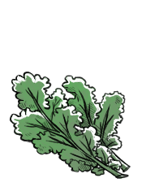

kale
Kale, or leaf cabbage (Brassica oleracea), is a cruciferous vegetable that is grown for its leaves, which can be green or purple. They are classified by leaf type, ranging from curly to bumpy, flat or speared. Kale is a source of protein, vitamin A, vitamin C, iron and calcium.
It is one of the hardiest of all brassicas, capable of withstanding winter temperatures as low as −15 °C (ref). Chopping it and then waiting at least 40 minutes before cooking it or mixing some mustard powder to cooked kale helps produce the anti-cancer nutrient, sulforaphane. Raw kale should be consumed in moderation as it contains small amounts of substances that can affect the function of thyroid gland (ref).